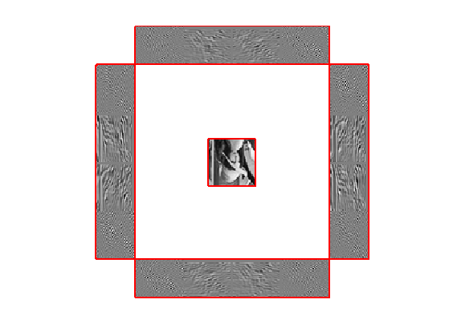
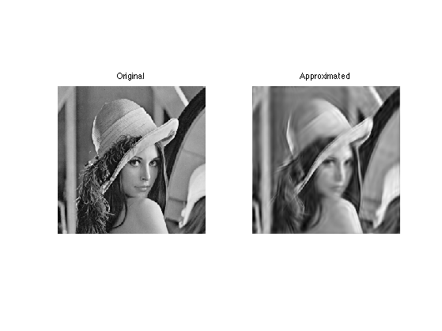
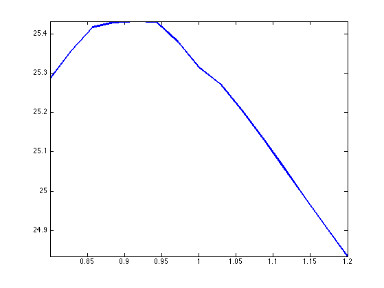
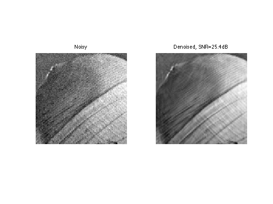
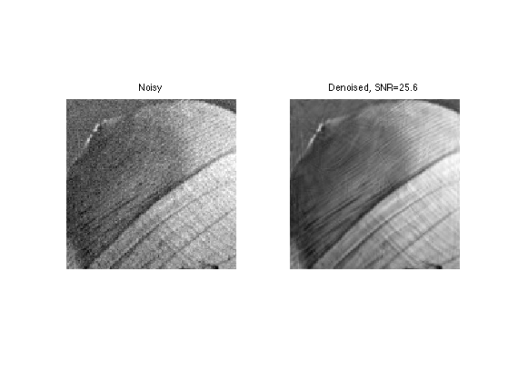
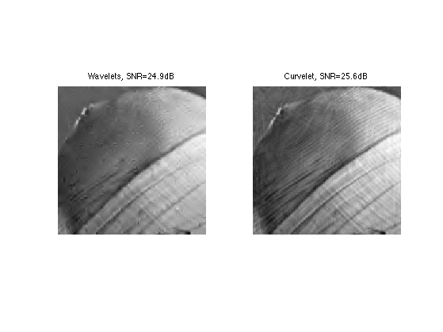

\[
\newcommand{\NN}{\mathbb{N}}
\newcommand{\CC}{\mathbb{C}}
\newcommand{\GG}{\mathbb{G}}
\newcommand{\LL}{\mathbb{L}}
\newcommand{\PP}{\mathbb{P}}
\newcommand{\QQ}{\mathbb{Q}}
\newcommand{\RR}{\mathbb{R}}
\newcommand{\VV}{\mathbb{V}}
\newcommand{\ZZ}{\mathbb{Z}}
\newcommand{\FF}{\mathbb{F}}
\newcommand{\KK}{\mathbb{K}}
\newcommand{\UU}{\mathbb{U}}
\newcommand{\EE}{\mathbb{E}}
\newcommand{\Aa}{\mathcal{A}}
\newcommand{\Bb}{\mathcal{B}}
\newcommand{\Cc}{\mathcal{C}}
\newcommand{\Dd}{\mathcal{D}}
\newcommand{\Ee}{\mathcal{E}}
\newcommand{\Ff}{\mathcal{F}}
\newcommand{\Gg}{\mathcal{G}}
\newcommand{\Hh}{\mathcal{H}}
\newcommand{\Ii}{\mathcal{I}}
\newcommand{\Jj}{\mathcal{J}}
\newcommand{\Kk}{\mathcal{K}}
\newcommand{\Ll}{\mathcal{L}}
\newcommand{\Mm}{\mathcal{M}}
\newcommand{\Nn}{\mathcal{N}}
\newcommand{\Oo}{\mathcal{O}}
\newcommand{\Pp}{\mathcal{P}}
\newcommand{\Qq}{\mathcal{Q}}
\newcommand{\Rr}{\mathcal{R}}
\newcommand{\Ss}{\mathcal{S}}
\newcommand{\Tt}{\mathcal{T}}
\newcommand{\Uu}{\mathcal{U}}
\newcommand{\Vv}{\mathcal{V}}
\newcommand{\Ww}{\mathcal{W}}
\newcommand{\Xx}{\mathcal{X}}
\newcommand{\Yy}{\mathcal{Y}}
\newcommand{\Zz}{\mathcal{Z}}
\newcommand{\al}{\alpha}
\newcommand{\la}{\lambda}
\newcommand{\ga}{\gamma}
\newcommand{\Ga}{\Gamma}
\newcommand{\La}{\Lambda}
\newcommand{\Si}{\Sigma}
\newcommand{\si}{\sigma}
\newcommand{\be}{\beta}
\newcommand{\de}{\delta}
\newcommand{\De}{\Delta}
\renewcommand{\phi}{\varphi}
\renewcommand{\th}{\theta}
\newcommand{\om}{\omega}
\newcommand{\Om}{\Omega}
\renewcommand{\epsilon}{\varepsilon}
\newcommand{\Calpha}{\mathrm{C}^\al}
\newcommand{\Cbeta}{\mathrm{C}^\be}
\newcommand{\Cal}{\text{C}^\al}
\newcommand{\Cdeux}{\text{C}^{2}}
\newcommand{\Cun}{\text{C}^{1}}
\newcommand{\Calt}[1]{\text{C}^{#1}}
\newcommand{\lun}{\ell^1}
\newcommand{\ldeux}{\ell^2}
\newcommand{\linf}{\ell^\infty}
\newcommand{\ldeuxj}{{\ldeux_j}}
\newcommand{\Lun}{\text{\upshape L}^1}
\newcommand{\Ldeux}{\text{\upshape L}^2}
\newcommand{\Lp}{\text{\upshape L}^p}
\newcommand{\Lq}{\text{\upshape L}^q}
\newcommand{\Linf}{\text{\upshape L}^\infty}
\newcommand{\lzero}{\ell^0}
\newcommand{\lp}{\ell^p}
\renewcommand{\d}{\ins{d}}
\newcommand{\Grad}{\text{Grad}}
\newcommand{\grad}{\text{grad}}
\renewcommand{\div}{\text{div}}
\newcommand{\diag}{\text{diag}}
\newcommand{\pd}[2]{ \frac{ \partial #1}{\partial #2} }
\newcommand{\pdd}[2]{ \frac{ \partial^2 #1}{\partial #2^2} }
\newcommand{\dotp}[2]{\langle #1,\,#2\rangle}
\newcommand{\norm}[1]{|\!| #1 |\!|}
\newcommand{\normi}[1]{\norm{#1}_{\infty}}
\newcommand{\normu}[1]{\norm{#1}_{1}}
\newcommand{\normz}[1]{\norm{#1}_{0}}
\newcommand{\abs}[1]{\vert #1 \vert}
\newcommand{\argmin}{\text{argmin}}
\newcommand{\argmax}{\text{argmax}}
\newcommand{\uargmin}[1]{\underset{#1}{\argmin}\;}
\newcommand{\uargmax}[1]{\underset{#1}{\argmax}\;}
\newcommand{\umin}[1]{\underset{#1}{\min}\;}
\newcommand{\umax}[1]{\underset{#1}{\max}\;}
\newcommand{\pa}[1]{\left( #1 \right)}
\newcommand{\choice}[1]{ \left\{ \begin{array}{l} #1 \end{array} \right. }
\newcommand{\enscond}[2]{ \left\{ #1 \;:\; #2 \right\} }
\newcommand{\qandq}{ \quad \text{and} \quad }
\newcommand{\qqandqq}{ \qquad \text{and} \qquad }
\newcommand{\qifq}{ \quad \text{if} \quad }
\newcommand{\qqifqq}{ \qquad \text{if} \qquad }
\newcommand{\qwhereq}{ \quad \text{where} \quad }
\newcommand{\qqwhereqq}{ \qquad \text{where} \qquad }
\newcommand{\qwithq}{ \quad \text{with} \quad }
\newcommand{\qqwithqq}{ \qquad \text{with} \qquad }
\newcommand{\qforq}{ \quad \text{for} \quad }
\newcommand{\qqforqq}{ \qquad \text{for} \qquad }
\newcommand{\qqsinceqq}{ \qquad \text{since} \qquad }
\newcommand{\qsinceq}{ \quad \text{since} \quad }
\newcommand{\qarrq}{\quad\Longrightarrow\quad}
\newcommand{\qqarrqq}{\quad\Longrightarrow\quad}
\newcommand{\qiffq}{\quad\Longleftrightarrow\quad}
\newcommand{\qqiffqq}{\qquad\Longleftrightarrow\qquad}
\newcommand{\qsubjq}{ \quad \text{subject to} \quad }
\newcommand{\qqsubjqq}{ \qquad \text{subject to} \qquad }
\]
Curvelet Denoising
This numerical tour explores the use of curvelets to perform image denoising.
Contents
Installing toolboxes and setting up the path.
You need to download the following files: signal toolbox and general toolbox.
You need to unzip these toolboxes in your working directory, so that you have toolbox_signal and toolbox_general in your directory.
For Scilab user: you must replace the Matlab comment '%' by its Scilab counterpart '//'.
Recommandation: You should create a text file named for instance numericaltour.sce (in Scilab) or numericaltour.m (in Matlab) to write all the Scilab/Matlab command you want to execute. Then, simply run exec('numericaltour.sce'); (in Scilab) or numericaltour; (in Matlab) to run the commands.
Execute this line only if you are using Matlab.
getd = @(p)path(p,path);
Then you can add the toolboxes to the path.
getd('toolbox_signal/');
getd('toolbox_general/');
Curvelet Transform
The curvelet tight frame was introduced by Candes and Donoho to enhance the wavelet representation of geometric cartoon images.
See for instance
E.J. Candès and D. L. Donoho, New tight frames of curvelets and optimal representations of objects with piecewise-C2 singularities, Comm. Pure Appl. Math., 57 219-266
In this tour, we use the discrete curvelet transform, detailed in
E. J. Candès, L. Demanet, D. L. Donoho and L. Ying, Fast discrete curvelet transforms, Multiscale Model. Simul., 5 861-899
and it uses the Curvelab implementation.
Load an image.
n = 256;
name = 'lena';
M = rescale(load_image(name, n));
Parameters for the curvelet transform.
options.null = 0;
options.finest = 1;
options.nbscales = 4;
options.nbangles_coarse = 16;
options.is_real = 1;
options.n = n;
Perform the transform.
MW = perform_curvelet_transform(M, options);
Display the transform.
clf;
plot_curvelet(MW, options);

One can perform a non-linear approximation of the image by thresholding the curvelet coefficients.
T = .2;
MWT = perform_thresholding(MW, T, 'hard');
One recovers the approximated image by using the inverse curvelet transform.
M1 = perform_curvelet_transform(MWT, options);
Display the approximation. Note that is not the best non-linear approximation since the curvelet tight frame is not an orthogonal
basis.
clf;
imageplot(M, 'Original', 1,2,1);
imageplot(clamp(M1), 'Approximated', 1,2,2);

Denoising with the Curvelet transform
Curvelet thresholding is useful to perform denoising.
We load a sub-set of the lena image.
name = 'lena';
n = 128;
M0 = rescale(crop(load_image(name),n, [108 200]));
options.n = n;
Add some noise.
sigma = .05;
M = M0 + sigma*randn(n);
Exercice 1: (check the solution) Compute the best threshold to minimize the denoising error in curvelets. Call Mcurv the optimal denoising.
exo1;

Display.
clf;
imageplot(clamp(M), 'Noisy', 1,2,1);
imageplot(clamp(Mcurv), ['Denoised, SNR=' num2str(snr(M0,Mcurv),3) 'dB'], 1,2,2);

Exercice 2: (check the solution) Perform cycle spinning to enhance the recovery error.
exo2;
Display.
clf;
imageplot(clamp(M), 'Noisy', 1,2,1);
imageplot(clamp(Mcurv), ['Denoised, SNR=' num2str(snr(M0,Mcurv),3)], 1,2,2);

Exercice 3: (check the solution) Compare with translation invariant hard thresholding.
exo3;

Inverse Problem Regularization
L1 sparsity in curvelets can be used to regularize inverse problems.
Exercice 4: (check the solution) Applies curvelet iterative thresholding to solve an inverse problem such as inpainting, deconvolution or compressed sending.
exo4;